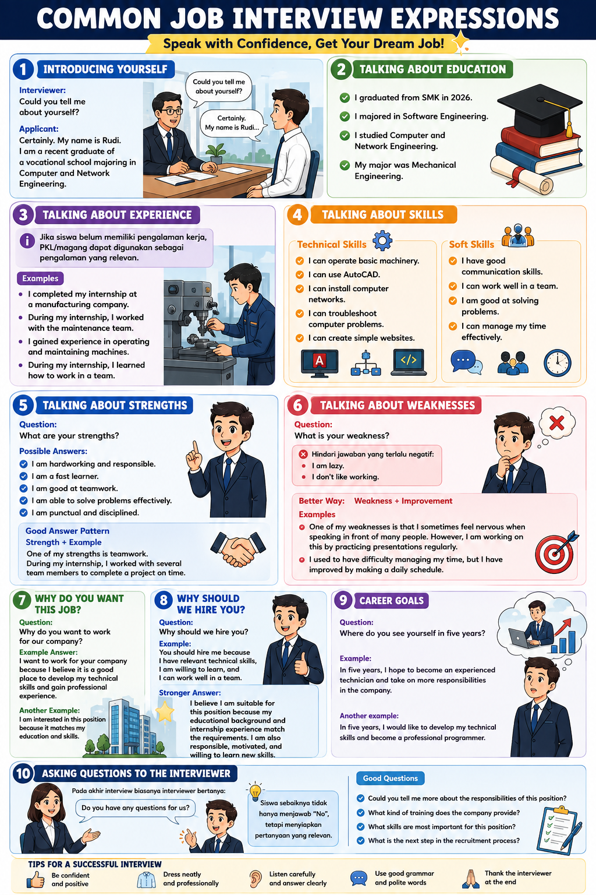

💼 Interactive Job Interview Video
Grade XII SMK • Learn → Watch → Answer → Check Your Understanding
Scene 1 — What is a Job Interview?


1 / 10
What is a Job Interview?
A job interview is a formal conversation between a job applicant and an interviewer. Pay attention to education, skills, experience, attitude, communication, motivation, teamwork, and professional ability.
🎯 Quick Check
Learning flow: Watch each scene, use Play for automatic presentation, and answer the interactive questions at checkpoints.